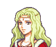

第20章外伝AThe Gale Bow
ワールドマップ
ロイたちは 『神将器』の一つを求めて
サカ草原の遺跡へと軍をすすめるSeeking one of the "Divine Weapons," Roy and the others advance their army toward the ruins on the Sacae plains.
しかし そこでは かつてロイたちが
倒したジュテ族の生き残りがBut there, survivors of the Djute tribe that Roy and the others once defeated
ワナをはって
ロイたちを待ち受けていたhad set a trap and lay in wait for them.
オープニング1
(背景、草原)

エトルリアの連中が
せめてきましたThe Etrurian lot are attacking!
やつら ここまで
自分たちのものにする気か・・・Are they trying to make even this place their own, to the very end...?
そうはさせん
兄弟にも知らせろWe won't let them. Send word to our brothers too.
ここは絶対に死守せよ
ジュテ族のうらみを晴らすのだWe will defend this place to the death without fail. We'll avenge the Djute tribe's grudge.
はっ！Yes, sir!
オープニング2
(背景、草原)
※シンが出撃している場合※If Shin is deployed

ここに『神将器』が・・・So this is where a "Divine Weapon" is...
シン
この場所のことは 知っていた？Shin, did you know about this place?

・・・聞いたことはある...I've heard of it.
『神騎兵』ハノンの使った弓The bow used by the "Divine Knight" Hanon,
『疾風の弓』ミュルグレが
おさめられているとthe "Gale Bow" Murgleis, is said to be kept here.
ハノン・・・女性で
『八神将』の称号を与えられたのはHanon... I've heard the only two women ever given
聖女エリミーヌとハノンの２人だと
伝えられているねthe title of "Eight Generals" were the Saint Elimine and Hanon.
そうらしいなSo it seems.
・・・気をつけたほうがいい...You should be careful.
ここを守っているのは
ジュテ族の生き残りだThose guarding this place are survivors of the Djute tribe.
われわれを カタキとして
猛攻をかけてくるぞThey'll see us as their mortal enemy and come at us with everything they have.
わかった 気を引きしめていこう！Got it. Let's keep our guard up!
※シンが出撃していない、かつダヤンが出撃している場合※If Shin is not deployed, and Dayan is deployed
ここに『神将器』が・・・So this is where a "Divine Weapon" is...
ダヤンさん
この場所のことは ご存知ですか？Dayan, do you know about this place?

もちろんだOf course.
『神騎兵』ハノンの使った
弓がおさめられているThe bow used by the "Divine Knight" Hanon is kept here.
ハノンが使った武器は
『疾風の弓』ミュルグレ・・・The weapon Hanon used was the "Gale Bow" Murgleis...
確か エルフィンに そう聞いたAt least, that's what I heard from Elffin.
おまえたちのところでは
そう呼ばれているらしいなSo that's what you call it over where you're from.
女性で 『八神将』の称号を
与えられたのはBeing a woman, the one given the title of "Eight Generals"
聖女エリミーヌとハノンの２人だと
伝えられているそうですis said to be the two of them, the Saint Elimine and Hanon.
そうかI see.
ところで ロイどの
気をつけたほうがいいBy the way, Lord Roy, you should be careful.
ここを守っているのは
ジュテ族の生き残りだThose guarding this place are survivors of the Djute tribe.
われわれを カタキとして
猛攻をかけてくるぞThey'll see us as their mortal enemy and come at us with everything they have.
わかった 気を引きしめていこう！Got it. Let's keep our guard up!
※シン、ダヤンが出撃していない、かつスーが出撃している場合※If Shin and Dayan are not deployed, and Sue is deployed
ここに『神将器』が・・・So this is where a "Divine Weapon" is...
スー
この場所のことは 知っていた？Sue, did you know about this place?

・・・話には...Only by rumor.
ハノンが使っていた
弓がおさめられているっていうわI hear the bow Hanon used is kept here.
ハノンというと 確か
『神騎兵』だね？Hanon, you mean the "Divine Knight," right?
だったら その弓は
『疾風の弓』ミュルグレ・・・Then that bow would be the "Gale Bow" Murgleis...
名前は知らないわI don't know its name.
知らないって
『八神将』が使った武器なのに？You don't know? Even though it's the weapon an "Eight General" used?
誰が使っていても同じ
名前なんて器にすぎないものIt's all the same no matter who used it. A name is nothing but a vessel.
そのもの自体を
「知って」いれば いいじゃないIsn't it enough to "know" the thing itself?
・・・この弓は
どうなのかな？...I wonder about this bow, though.
ぼくたちがいう
ミュルグレだと思うかい？Do you think it's the one we call Murgleis?
ええ 話を聞いたかぎりでは
まちがいないわYes, from what I've heard, there's no mistake.
※シン、ダヤン、スーが出撃していない場合※If Shin, Dayan, and Sue are not deployed
ここに『神将器』が・・・So this is where a "Divine Weapon" is...
エルフィン
この場所のことは なにか分かった？Elffin, did you find out anything about this place?

・・・サカ地方の伝承を
調べましたところ...I looked into the legends of the Sacae region, and
ここには『神騎兵』ハノンの使った弓here, the bow used by the "Divine Knight" Hanon,
『疾風の弓』ミュルグレが
おさめられているとのことですthe "Gale Bow" Murgleis, is said to be kept.
ハノン・・・女性で
『八神将』の称号を与えられたのはHanon... I've heard the only two women ever given
聖女エリミーヌとハノンの２人だと
伝えられているねthe title of "Eight Generals" were the Saint Elimine and Hanon.
はいYes.
・・・ロイ様 ここを守っているのは
ジュテ族の生き残りとのことです...Lord Roy, those guarding this place are said to be survivors of the Djute tribe.
彼らは わが軍を「仇」とし
猛攻をかけてくることでしょうThey'll treat our army as their "enemy" and come at us with everything they have.
わかった 気を引きしめていこう！Got it. Let's keep our guard up!
トオリル、ブラクル、クドカ、マラル、カブル、チャン初戦時・撃破時
(なし)
On seizing
※場所が間違っていた場合のみ※Only if you attacked the wrong place
敵がワナにかかったぞ
かかれっ！The enemy's fallen for the trap! Get them!
After seizing
(背景、草原)
ありました！
テントの中の祭壇に 弓が！We found it! A bow, on the altar inside the tent!
・・・・・・.........
これが
『疾風の弓』ミュルグレかSo this is... the "Gale Bow" Murgleis.
・・・普通の弓のように
見えるけれど...It looks like an ordinary bow, but
きっと すごい力が
秘められているのだろうなsurely it holds some tremendous power within it.

ロイ様Lord Roy.
近くにいたベルン兵が
逃げ出しているとの事ですぞIt seems the Bern soldiers who were nearby are fleeing.
そうかI see.
「そうか」ではありませんぞ
追撃せねば"I see" isn't good enough. We must pursue them.
いいNo.
戦場から離れようとしているんだ
彼等に もう戦意はないだろうThey're trying to get away from the battlefield. They surely have no more will to fight.
しかしですな・・・But still...
兵にも家族がいるんだ
必要以上に戦うことはないよSoldiers have families too. There's no need to fight them more than necessary.
(「ミュルグレを手に入れた」)
(一度マップ画面に戻り、背景、草原)
マリナス この手紙を
エトルリアのヨーデル司祭に送ってほしいMarinas, I'd like you to send this letter to Bern's Priest Yodel.
手紙ですか・・・内容をお聞きしても
よろしいですかな？A letter...? May I ask what it says?
ニイメさんから聞いた話だよ
ベルンの用いる『竜』についてのねIt's something I heard from Niime. About the "dragons" Bern makes use of.
ほう！
いったい どのような話をなされたので？Oh! Whatever sort of talk did you have?
話すと長くなるからIt would take a while to explain, so...
まだ封はしていないし
手紙に 目を通してくれればいいよI haven't sealed it yet, so it'd be best if you just read over the letter yourself.
わかりました
では 早速・・・Understood. Well then, let me have a look right away...

・・・ロイ様...Lord Roy.
ギネヴィア姫
どうかされましたか？Princess Guinevere. Is something the matter?
・・・これから先は ベルンですね...From here on, it's Bern, isn't it.
はい ぼくたちは いよいよ
ベルン本国へと進軍しますYes, we'll finally be advancing our army into Bern's homeland.
・・・ですから 今度は最後まで
お聞かせ願えますか...So, this time, could I ask you to hear me out to the very end?
・・・はい
私もそのつもりでまいりました...Yes. I came prepared to do just that.
・・・当時のゼフィール王子は
ベルンをつぐ者として...At the time, Prince Zephiel, as Bern's heir,
申し分なく成長されていたのですよねhad grown up with nothing lacking, hadn't he.
そう聞いていますSo I've heard.
それでも ベルン先王は
ゼフィール王子をうとんじられたのですね？Even so, Bern's former king came to resent Prince Zephiel, didn't he?
むしろ・・・兄が すぐれた成長を
とげたから なのですRather... it's because my brother had grown so remarkably.
え・・・Eh...
父 ベルンの先王は 王としては
平凡な才能の人だったそうですMy father, Bern's former king, was, as a king, a man of ordinary talent, they say.
だから 秀でた兄の才能が さらに 父の感情を
冷たくさせてしまったらしいのですSo my brother's outstanding talent seems to have only made Father's feelings all the colder.
・・・・・・.........
そして ついに ある日
父は兄を呼んで言ったそうですAnd then, one day at last, Father is said to have called my brother and told him:
「ベルン王位は ギネヴィアの夫に
しかるべき者をむかえて つがせる」と"Someone fit for it shall be brought in to marry Guinevere, and he shall take Bern's throne."
なっ！
・・・それは あんまりだ！What...! ...That's too much!
それでも 兄は そのとき
それならそれでいい と答えたそうですEven so, my brother is said to have answered then that if that was how it was, so be it.
しかし 次の王として期待されていた兄に対して
そのような事は まわりが許しませんでしたBut to my brother, who everyone expected to be the next king, those around him would not allow such a thing.
そして 思いあまった父は・・・And so, Father, driven to distraction...
・・・ゼフィール王子の
暗殺を？...Plotted to assassinate Prince Zephiel?
・・・兄は 酒宴の席で 父王 手ずから
毒の入った杯をわたされました...At a drinking banquet, my brother was handed a poisoned cup directly by our father the king.
そして それが 兄にとって 最初で最後の
父からうけとった杯だったとか・・・And that, it's said, was the first and last cup he ever received from Father...
部屋にもどってから
兄は苦しみはじめAfter returning to his room, my brother began to suffer,
それから１０日以上
生死をさまよったそうですand for more than ten days after that, he is said to have hovered between life and death.
兄を養育した マードック将軍に
かくまわれてHe was sheltered by General Murdock, who had raised him,
なんとか 兄は命をとりとめましたand somehow, my brother's life was spared.
・・・父王は その後はなにも
なさらなかったのですか？...Did Father do nothing after that?
・・・いいえ...No.
兄を助けた マードック将軍と
兄の母も邪魔者としHe treated General Murdock, who had saved my brother, and my brother's mother as obstacles too,
兄もろとも 亡きものにしようと
策をめぐらせていたそうですand is said to have schemed to do away with my brother along with them.
まだ病の床にあった兄はそれを知り
自分が死んだといつわって・・・My brother, still bedridden with illness, learned of this and feigned his own death...
兄の死を確かめようとした父王を
ひつぎの中から・・・剣で・・・...and when Father came to confirm my brother's death, from within the coffin... with a sword...
・・・・・・.........
・・・当時 幼なかった私には そのような
事情が わかるはずもありませんでした...At the time, I was still young, and had no way of understanding such circumstances.
私にわかったのは あの日・・・父が死んだ日
以来 兄の顔から笑顔が消えたことだけですAll I understood was that from that day—the day Father died—onward, my brother's face lost its smile.
それまでは きびしいところはありましたが
あたたかくて優しい兄でした だから・・・Until then, he could be strict, but he was a warm, gentle brother. That's why...
ギネヴィア姫・・・Princess Guinevere...
だから 私は心のそこで
兄はかわっていないThat's why, deep in my heart, I believed my brother hadn't changed.
いつか きっと あのやさしかった
ゼフィール兄さまに戻ってくれるThat someday, surely, he would return to being the kind Zephiel brother he once was.
そう信じて・・・
ずっと そう信じて・・・I believed that... I kept believing that, all along...
そうだったのですか・・・I see, so that's how it was...
・・・ですが 今の兄はもう
私の声がとどかないところにいます...But now, my brother is somewhere my voice can no longer reach.
ロイ様 お願いです
兄を・・・兄を 止めてくださいLord Roy, I beg you. Please... please stop my brother.
これ以上 ベルンや 他の地方の人々を
苦しめるのを やめさせてくださいPlease make him stop tormenting Bern and the people of other regions any further.
たとえ 剣にうったえることに
なっても ですか？Even if it means appealing to the sword?
・・・ロイ様に全てをお任せしたときから
覚悟は決めています...Ever since I entrusted everything to Lord Roy, I've made up my mind to it.
わかりました
必ず ゼフィール王を 止めてみせます！Understood. I will definitely stop King Zephiel!
姫にたくされた
『ファイアーエムブレム』に誓って！I swear it on the "Fire Emblem" entrusted to me by the princess!